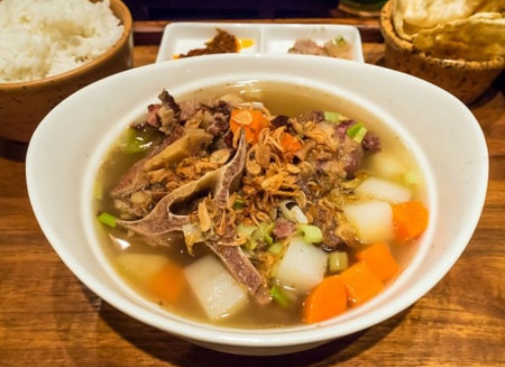

Sumber: theAsianparent
Bahan:
- 1 kg buntut sapi
- 2 cm jahe, digeprek
- 1 batang daun bawang, iris
- 1 sdm minyak goreng
- 200 gr wortel, potong serong atau dadu
- 250 gr kentang, potong dadu
- Pala bubuk secukupnya
- Air secukupnya untuk merebus
Bumbu Halus:
- 6 siung bawang merah
- 3 siung bawang putih
- 1 sdt merica bulat
Pelengkap:
- Bawang merah goreng
- Tomat dipotong dadu
- Daun bawang diiris kasar
Cara Membuat:
- Masukkan buntut ke dalam panci hingga terendam air, rebus di atas api sampai mendidih.
- Buang buih yang terapung di atas dan air rebusan pertama buntut. Hal ini berguna agar kaldu tidak berbau.
- Panaskan minyak goreng, kemudian tumis bumbu halus.
- Selanjutnya masukkan bubuk pala, jahe, dan daun bawang. Masak hingga harum.
- Berikutnya masukkan buntut dan beri air.
- Rebus dalam panci tertutup dengan api kecil.
- Rebus wortel dan kentang di panci terpisah hingga matang, kemudian tiriskan.
- Setelah buntut lunak, ambil buntutnya lalu saring kaldunya kemudian masukkan kembali buntut ke dalam kaldu yang sudah disaring.
- Didihkan buntut kembali dengan api kecil.
- Letakkan wortel dan kentang ke dalam mangkuk kemudian tuangkan kaldu dan buntut, kemudian beri taburan pelengkapnya.